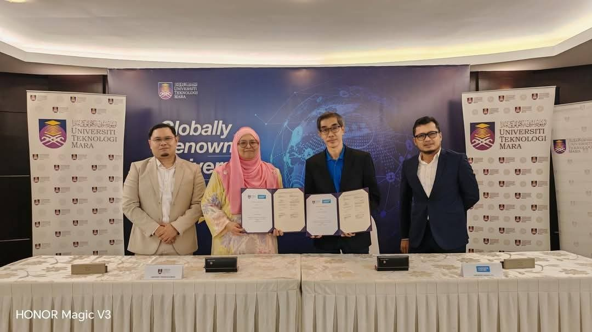
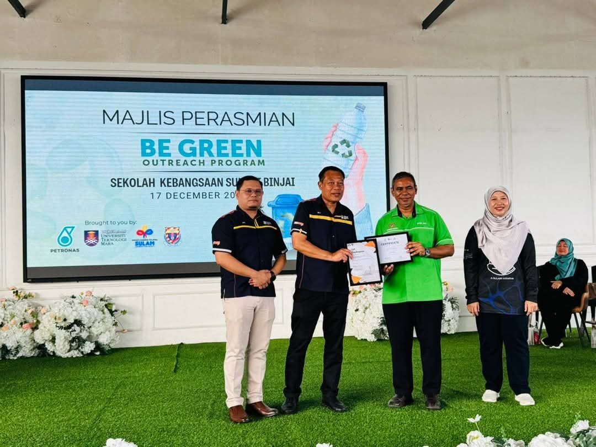

Industry & consultancy
Work with INPRES
138 industry projects worth RM 10.9M for 72 companies, led by registered Professional Engineers.
Services
What we do for industry
CIMAH safety reports
Safety reports and assessments for major hazard installations under the CIMAH Regulations, by competent persons.
Quantitative risk assessment
Consequence modelling, QRA, facility siting and inherent safety reviews for new and existing plants.
Corrosion analysis
Coupon analysis and interpretation, pipeline corrosion studies and material qualification testing.
Process validation
Lab-scale process development, optimisation and validation before scale-up.
Environmental engineering
Wastewater and air-pollution control design, adsorbents and environmental impact assessment.
Training & knowledge transfer
Short courses, knowledge transfer programmes and expert panels for industry teams.
Recent projects
On site in 2025 and 2026
CIMAH GES Klang Terminal C3C4 LPG
GES Klang Terminal Sdn Bhd
CIMAH Malay-Sino Chloro Alkali Plant T Kalong
Malay-Sino Chemical Industries Sdn Bhd
Consultation Services for Lab Scale Process Optimization of HREE/LREE Separation from RE Carbonate, Incorporating Mass Balance, P&ID Development, and Solvent Extraction Purification of Nd, Pr, Ce, and Y to 99.95% Purity
Pescada Resources
Material Qualification Test on Transmission Line Arrester for TNB Transmission Tower
Siemens Energy Surge Arrester Ltd
Process Validation for the Laboratory Separation of Heavy and Light Rare Earth Elements from Rare Earth Carbonate
Pescada Resources
Baseline Analysis of Flexible Pipes-Polymer HDPE Coupon Monitoring for PTT Exploration and Production Public Company Limited (PTTEP)
Chemsain Konsultant Sdn Bhd
CIMAH Ancom Crop Care Chems Toxic Flammable
Ancom Crop Care Sdn Bhd
CIMAH Ancom Klang
Ancom Crop Care Sdn Bhd
CIMAH AT&S Austria Kulim oxidizer and Toxic Chemicals
AT&S Austria Technologie & Systemtechnik (Malaysia) Sdn Bhd
CIMAH Coretech GMC Korea Toxic Flammable Assessment
Coretech GMC Sdn Bhd
CIMAH Flexitech Toxic Assessment
Flexitech Sdn Bhd (F18B)
CIMAH Fuji Electric Kulim H2O2 H2SO4 Tok Dev
Fuji Electric (Malaysia) Sdn Bhd
CIMAH PETRONAS Bay Fuel & LPG Terminal Sepanggar Sabah
PETRONAS Dagangan Berhad
CIMAH PETRONAS Pasir Gudang Fuel & LPG Terminal
PETRONAS Dagangan Berhad
Clients
Trusted by



